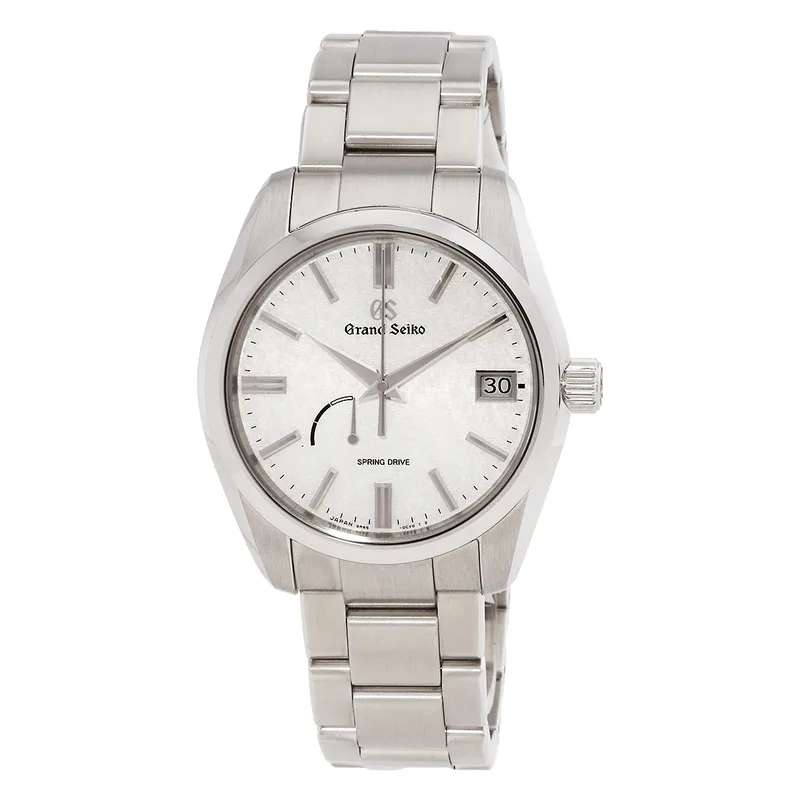

Encyclopedia / Grand Seiko / Heritage SBGA465

Current deal · verified Oct 19, 2026, 10:32 PM ET
$3,795 List $4,800
Save $1,005 (21%) · new · Jomashop
Ref. SBGA465 · Listed as new
Brand new from Jomashop, a grey-market (non-authorized) dealer, so expect the store's warranty (Jomashop lists '2 Year Jomashop Warranty') rather than the brand's. 'List' is the retail figure the dealer displays; I could not confirm it on the brand's own US site. Prices change fast; check the store before you buy.
Price comparison: fixed-price listings
| Store | Condition | Box & papers | Asking price | Link | Checked |
|---|---|---|---|---|---|
| Jomashop | new | Yes* | $3,795 | View | Oct 19, 2026 |
Fixed-price (buy-now) asking prices in USD for ref. SBGA465, cheapest new and cheapest pre-owned with box and papers per store, sorted low to high and checked Oct 19, 2026 (ET). Buy-now listings only. Pre-owned listings are shown only when the listing states box and papers. * New from a grey-market dealer: comes boxed, but the warranty card may be the dealer's rather than the brand's. Chrono24 rows are individual third-party marketplace sellers. Prices change fast; confirm with the store.
What it really costs
| Market | Price | Source |
|---|---|---|
| List price per Jomashop | $4,800 | jomashop.com |
| New at Jomashop | $3,795 | Jomashop |
| Pre-owned (Chrono24 asks) | about $4,050 – $4,950 (median ~$4,500, 20 listings sampled) | Chrono24 |
All prices in USD, checked Oct 19, 2026 (ET). Pre-owned ranges are the middle 80% of asking prices on the first Chrono24 results page for that ref (about 60 listings, used and some unworn), fixed-price listings only. Grey-market = brand-new from a non-authorized dealer.
Buying guide
Key references
| Ref. | What it is | US retail |
|---|---|---|
| SBGA465 | Heritage Automatic White Dial Men's Watch | $4,800 |
Which one I'd pick
Why buy: it's one of the cheapest Grand Seikos in this batch.
What to check before you buy
- Warranty: grey-market new watches usually carry the dealer's warranty, not the brand's. Ask which one you get and whether the brand's warranty card is included.
- Exact reference: dial colour, size and strap change the price. Match the full ref (SBGA465) before comparing deals.
- Fakes and red flags: be wary of prices far below the ranges above, stock photos only, or sellers who won't show the caseback, serial and papers.
Alternatives worth a look
- Grand Seiko Heritage Collection 'Snowflake': The titanium Snowflake. (41 mm high-intensity titanium, Calibre 9R65 Spring Drive, retail $6,900)
- Tudor 1926: Entry Tudor dress watch. (41 mm steel, Calibre T601, retail $2,650 (m91650-0001, per Tudor))
- Longines Master Collection: Swiss dress automatic. (40 mm Stainless Steel, Longines Calibre L619/888, retail $2,550 (list price per Jomashop & WatchMaxx))
History
Grand Seiko began in December 1960 as Seiko's highest-grade domestic line, and adopted Spring Drive in 2004 with the Calibre 9R65.
The SBGA465 is a Heritage automatic with a white dial, per Jomashop.
Specifications
| Brand | Grand Seiko |
|---|---|
| Model | Heritage SBGA465 |
| Key references | SBGA465 |
| Launch year | Not confirmed |
| Case | 40 mm Stainless Steel |
| Thickness | 12.3 mm |
| Band width | 20 mm |
| Crystal | Scratch Resistant Sapphire |
| Caseback | Solid |
| Bezel | Fixed |
| Bezel material | Stainless Steel |
| Dial | White |
| Strap/bracelet | Stainless Steel |
| Functions | Date, Hour, Minute, Second, Power Reserve Indicator |
| Movement | Seiko Calibre 9R65, automatic |
| Power reserve | About 72 hours |
| Water resistance | Not confirmed |
| Approx. US retail (Oct 2026) | $4,800 (list price per Jomashop) |
Specs from the retailer (Jomashop/WatchMaxx) or brand product page linked above for the main reference; see our research notes for which. Retail prices are list prices, not market value, and change often.
Highlights
- Heritage collection
- White dial
- Steel case
FAQ
How much is the Grand Seiko Heritage SBGA465?
List price per Jomashop: $4,800. New, the best verified price was $3,795 at Jomashop (checked Oct 19, 2026, 10:32 PM ET). Pre-owned asks on Chrono24 mostly ran $4,050 to $4,950.
What movement does the Heritage SBGA465 use?
The SBGA465 checked here uses the Seiko Calibre 9R65 (automatic) with about 72 hours of power reserve.
How big is the Heritage SBGA465?
40 mm Stainless Steel, 12.3 mm thick.
Want this watch for less?
Every week I hunt down genuine deals on watches like the Heritage SBGA465 and send the best ones. Free, one email a week.
Get the free weekly issuePrices and availability last checked Oct 19, 2026. No affiliate links: I don't earn anything if you buy. Sources are listed in our research notes and linked above.